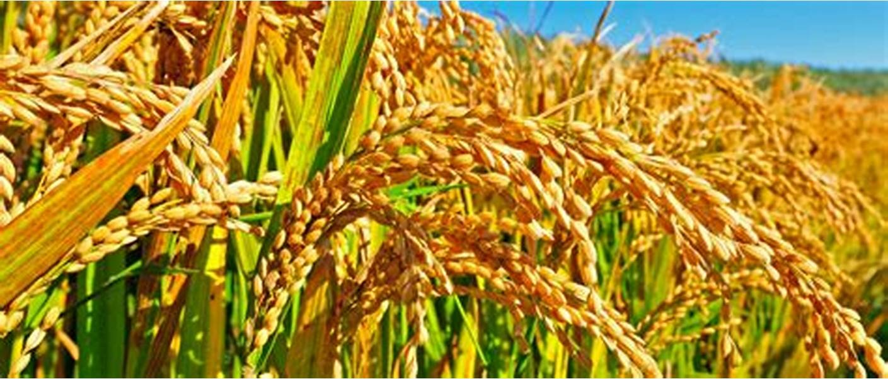

This is a home where different value-chain in agriculture are linked together to boost Farmer-Manufacturer relationship.
This is particularly packaged to help the Farmers and industries have quality raw material to carry out their processes.
Our vision is to bring out the best quality product in our market segment and produce vitals in different value chain in agricultural sector in Nigeria and beyond. Many companies across the globe sort initiatives and in the field of information communication and technology to reduce some of the botleneck in the production sectors.
Demand for food is growing at the same time the supply side faces constraints in land and farming inputs. More...